Xlib Programming Manual (O'Reilly & Associates, Inc.) |
The X routines that draw graphics are called graphics primitives. They draw dots, lines, text, images, and tile or fill areas, and will be described fully in Chapter 6, Drawing Graphics and Text. But a given graphics primitive does not contain all the information needed to draw a particular graphic. A server resource called a graphics context (GC) contains values for variables that apply to each graphics primitive. The appearance of everything that is drawn by a program is controlled by the GC that is specified with each graphics primitive. (The border and background of a window are not affected or controlled by the GC--they are controlled by window attributes, and are drawn by the server.) What is drawn into a pixmap is also controlled by the GC used in the drawing to the pixmap and, again, possibly with a different GC, if the pixmap is copied into a window. To draw, you must first create a GC and set its values, then specify that GC as an argument in the graphics primitive.
There are two performance-related reasons X was designed to use GCs. First, they reduce the traffic between Xlib and the server because the GC information is held in the server and needs to be sent only once before the first graphics request. Each subsequent primitive that specifies the same GC will use the same values. When a few settings of the GC need to be changed, only the selected few need to be sent, not the entire GC. Second, you can create several GCs and then simply specify which GC you want applied to each graphics request. This has important performance benefits on servers that are capable of caching multiple GCs in their display hardware.
The GC also allows for more convenient programming, since to provide the same flexibility without the GC, you would need to specify an absurd number of arguments every time you called a graphics primitive.
A few more words are needed regarding the distinction between the roles of the graphics primitive and the GC. You can think of a graphics primitive as specifying the general shape to be drawn, while the GC specifies how to draw it. For example, a primitive that draws a filled rectangle specifies the top-left corner of the rectangle in the drawable and its dimensions, while the GC specifies its color or the pattern applied to it (among other things). Note that both the graphics primitive and the GC play a role in selecting exactly which pixels are drawn. For example, the graphics primitive specifies the start and end points for lines (including unfilled arcs, rectangles, and polygons), while the GC specifies the width of the line and the shape of the joints and ends of the lines. Other components of the GC affect pixel selection with other graphics primitives. For all primitives, the GC includes a clip mask that you can use to restrict which pixels are drawn.
To predict the effect of particular GC settings on a particular graphics primitive, it is useful to visualize the drawing process in a number of stages, even though in reality the drawing of each bit of each pixel is performed by the server in a single equation.
Since we are not yet using any of the tricks that require use of the plane_mask or logical function, the third and fourth stages in Figure 5-1 use the default values of these GC elements. They therefore do not modify the result of the graphics primitive.
To make this overview complete, it's important to mention that the GC also has the following two features (described more completely in Section 5.6, "Graphics Exposure" and Section 5.7, "Subwindow Mode"):
Four stages in drawing a line
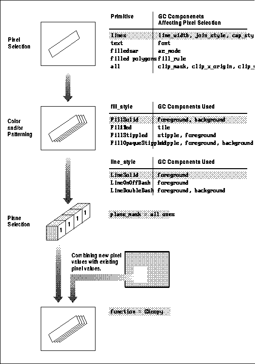
Example 5-1 and Table 5-1 present the XGCValues structure and the masks used when calling XCreateGC() or XChangeGC().
The GCValues structure
/* Data structure for setting graphics context */
typedef struct {
int function; /* Logical function */
unsigned long plane_mask; /* Plane mask */
unsigned long foreground; /* Foreground pixel */
unsigned long background; /* Background pixel */
int line_width; /* Line width */
int line_style; /* LineSolid, LineOnOffDash,
* LineDoubleDash */
int cap_style; /* CapNotLast, CapButt, CapRound,
* CapProjecting */
int join_style; /* JoinMiter, JoinRound, JoinBevel */
int fill_style; /* FillSolid, FillTiled, FillStippled,
* FillOpaqueStippled */
int fill_rule; /* EvenOddRule, WindingRule */
int arc_mode; /* ArcChord, ArcPieSlice */
Pixmap tile; /* Tile pixmap for tiling operations */
Pixmap stipple; /* Pixmap of depth 1 */
int ts_x_origin; /* Offset for tile or stipple operations */
int ts_y_origin;
Font font; /* Font for text operations (except
* XDrawText) */
int subwindow_mode; /* ClipByChildren, IncludeInferiors */
Bool graphics_exposures; /* Should events be generated on
* XCopyArea, XCopyPlane */
int clip_x_origin; /* Origin for clipping */
int clip_y_origin;
Pixmap clip_mask; /* Bitmap for clipping */
int dash_offset; /* Patterned/dashed line information */
char dashes;
} XGCValues;
The meaning and possible values for each member are described
in Sections 5.3 through 5.7.
Table 5-1 shows the symbols used to specify which members
of the XGCValues structure actually contain meaningful values. The
valuemask is made up of these symbols combined by means of a bitwise OR
(|).
| Member | Mask | Set Bit | Default |
|---|---|---|---|
| function | GCFunction | 0 | GXcopy |
| plane_mask | GCPlaneMask | 1 | all 1 's |
| foreground | GCForeground | 2 | 0 |
| background | GCBackground | 3 | 1 |
| line_width | GCLineWidth | 4 | 0 |
| line_style | GCLineStyle | 5 | LineSolid |
| cap_style | GCCapStyle | 6 | CapButt |
| join_style | GCJoinStyle | 7 | JoinMiter |
| fill_style | GCFillStyle | 8 | FillSolid |
| fill_rule | GCFillRule | 9 | EvenOddRule |
| arc_mode | GCArcMode | 22 | ArcPieSlice |
| tile | GCTile | 10 | pixmap filled with foreground pixel |
| stipple | GCStipple | 11 | pixmap filled with 1 's |
| ts_x_origin | GCTileStipXOrigin | 12 | 0 |
| ts_y_origin | GCTileStipYOrigin | 13 | 0 |
| font | GCFont | 14 | (implementation dependent) |
| subwindow_mode | GCSubwindowMode | 15 | ClipByChildren |
| graphics_exposures | GCGraphicsExposures | 16 | True |
| clip_x_origin | GCClipXOrigin | 17 | 0 |
| clip_y_origin | GCClipYOrigin | 18 | 0 |
| clip_mask | GCClipMask | 19 | None |
| dash_offset | GCDashOffset | 20 | 0 |
| dashes | GCDashList | 21 | 4 (i.e., the list [4, 4]) |
Table 5-1 lists the default values for each element of the GC. A useful quick reference to the graphics context is provided inside the back cover of Volume Two, Xlib Reference Manual.
A valuemask composed of the symbols shown in Table 5-1 is used in XChangeGC(), XCopyGC(), and XCreateGC(). In XCopyGC(), though, the valuemask indicates which members are copied from the source GC to the destination GC, and the rest of the members in the destination are left unchanged. In XChangeGC(), the specified members are changed and the rest are left unchanged.
Example 5-2 shows a simple way to set some of the values for a GC before creating it. This example uses the default values except for the foreground and background pixel values. You must always set at least the foreground component of the GC, and also the background component if it is used in what you intend to draw. This is because the default values for the foreground and background components, zero and one respectively, are not guaranteed to be black and white or even contrasting. (The relationship between pixel values and colors is explained in Chapter 7, Color.)
Example of setting a GC while creating it
In Example 5-2, the foreground pixel value is set to the value returned by the BlackPixel() macro. This will result in a color of black if the default colormap is installed (more on this in Chapter 7, "Color"). To obtain a pixel value that represents any color other than black or white, you will need to allocate the color as described in Chapter 7, "Color."GC gc; XGCValues values; unsigned long valuemask; . . /* Open display, create window, etc. */ . . values.foreground = BlackPixel(display,screen_num); values.background = WhitePixel(display,screen_num); gc = XCreateGC(display, RootWindow(display, screen_num), (GCForeground | GCBackground), &values); /* Now you can use gc in drawing routines */
Convenience functions are also available to change most elements of a GC after it is created. These functions are listed in Sections 5.3 through 5.7, which describe each GC element in detail. Example 5-3 performs the same functions as Example 5-2 but by creating a default GC and then modifying the contents with convenience functions.
Example of setting default GC then changing it
You may wonder which of these two ways is more efficient, setting the XGCValues and valuemask, or calling the convenience functions. Actually, there is not much difference, since in both cases, the individual requests to change the same GC are packaged into a single protocol request before being sent to the server. This optimization is implemented by Xlib. The method you should choose is mainly a matter of personal preference.GC gc; . . . /* Open display, create window, etc. */ . . . gc = XCreateGC(display, RootWindow(display, screen_num), 0, NULL); XSetForeground(display, gc, BlackPixel(display,screen_num)); XSetBackground(display, gc, WhitePixel(display,screen_num)); /* Now you can use gc in drawing routines */
Also note that Xlib provides the function XFlushGC()
to defeat Xlib's caching of GC changes by sending them to the server immediately
instead of waiting until the GC is needed. XFlushGC() is used mainly
in extensions that have drawing requests which otherwise would not trigger
Xlib's cache.
Example of switching graphics contexts
Whether it is faster to switch between GCs or to modify a few values of a single GC depends on the particular server implementation. On some types of display hardware, several or many GCs can be cached. On these servers, it is faster to switch between GCs than to change members of them. On servers that do not cache or that cache only one GC, it is faster to change one or two elements of the GC than to switch between two slightly different GCs. There is no way for the application to tell which of these two server types is in use. Therefore, accepted practice is to compromise by creating a small number of GCs (more on this in Section 5.9, "GCs and Server Efficiency").GC gc1, gc2; XGCValues values; unsigned long valuemask; . . . /* Open display, create window, etc. */ values.foreground = BlackPixel(display,screen_num); values.background = WhitePixel(display,screen_num); gc1 = XCreateGC(display, RootWindow(display, screen_num), (GCForeground | GCBackground), &values); values.foreground = WhitePixel(display,screen_num); values.background = BlackPixel(display,screen_num); gc2 = XCreateGC(display, RootWindow(display, screen_num), (GCForeground | GCBackground), &values); /* Now you can use either gc in drawing routines, thereby * quickly swapping the foreground and background colors */
Now that you know how to create, set, and modify the GC,
and how to set up multiple GCs, we can go into more detail about each element
of the GC. The following sections describe each member of the graphics
context, grouped according to the how they affect the drawing process:
Pixel Selection, Coloring and Patterning, and Graphics Tricks.
A line_width greater than or equal to 1 is considered a wide line, and the value 0 is a special case, considered a thin line. Wide and thin lines often use different drawing algorithms. The thin line is intended to be a fast algorithm for drawing a line of width 1 but may not be as uniform as a wide line between different servers.
Wide lines are drawn centered on the path described by the graphics request. A wide line drawn from [x1,y1] to [x2,y2] always draws the same pixels as a wide line drawn from [x2,y2] to [x1,y1], not counting cap and join styles. This is not necessarily the case for thin lines.
Unless otherwise specified by the join or cap style, the bounding box of a wide line with endpoints [x1,y1], [x2,y2] and width w is a rectangle with vertices at the following real coordinates:
where is the angle of the line measured from horizontal.Lower Left: [x1-(w*sin(q)/2), y1+(w*cos(q)/2)] Upper Right: [x1+(w*sin(q)/2), y1-(w*cos(q)/2)] Lower Left: [x2-(w*sin(q)/2), y2+(w*cos(q)/2)] Lower Right: [x2+(w*sin(q)/2), y2-(w*cos(q)/2)]
A pixel is drawn if the center of the pixel is fully inside the bounding box (which is viewed as having infinitely thin edges). If the center of the pixel is exactly on the bounding box, it is part of the line only if the interior of the box is immediately to the pixel's right. Pixels with centers on a horizontal edge are part of the line only if the interior of the box is immediately below the pixel.
Thin lines (line_width == 0) are one-pixel-wide lines drawn using an unspecified, device-dependent fast algorithm. The set of points comprising thin lines will not be affected by clipping.
A wide line of width 1 and a thin line with line_width 0 drawn between the same two points may not be exactly alike. Because of their different drawing algorithms, thin lines may not mix well with wide lines, aesthetically speaking. For precise and uniform results across all displays, use a line_width of 1 rather than 0. If speed is the goal, use a line_width of 0.
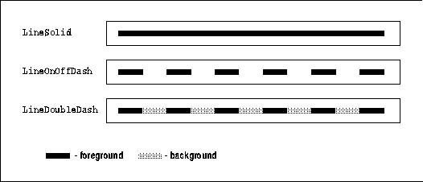
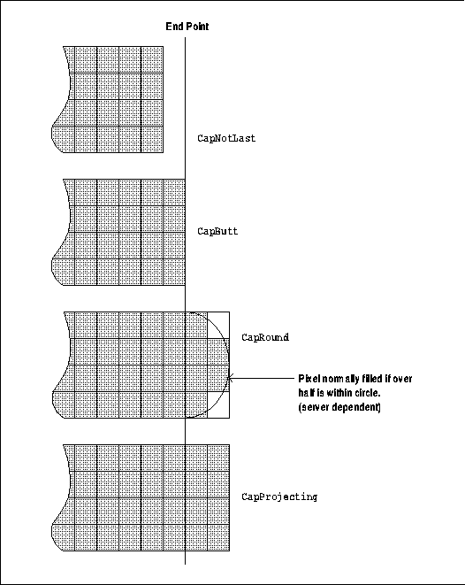
The line join styles
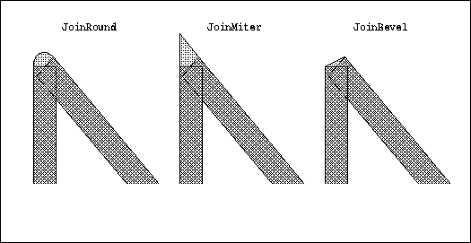
Detail of JoinRound for 8-pixel-wide lines
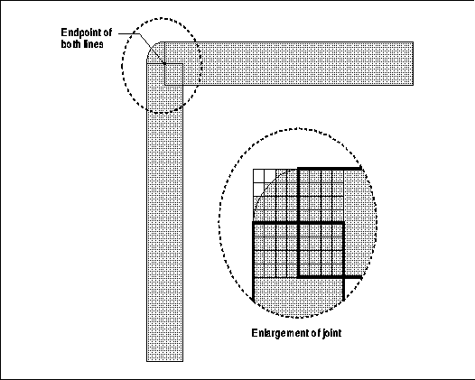
In XSetDashes(), the dash_list argument is a real list, with each value representing the length of a single dash or gap in the line. The initial and alternating members of dash_list are the length of the even dashes; the others are the odd dashes (gaps). All members must be nonzero. The length of the dash_list is also an argument to XSetDashes(). The dashes element of XGCValues is equivalent to specifying a two-member dash_list [N, N] in XSetDashes(), where N is the single value specified in XGCValues.dashes.
The dash_offset for XSetDashes() defines the phase of the pattern, specifying how many pixels into the pattern the line should actually begin. Figure 5-6 shows the same line drawn with and without offset to demonstrate its effect.
Example 5-5 shows a code segment that creates and sets the line dashes of five GCs. Figure 5-6 shows the lines that result from drawing with these GCs.
Code segment specifying five styles of dashed line in five GCs
#define NUMLINES 5
#define DOTTED_LIST_LENGTH 2
#define DOT_DASHED_LIST_LENGTH 4
#define SHORT_DASHED_LIST_LENGTH 2
#define LONG_DASHED_LIST_LENGTH 2
#define ODD_DASHED_LIST_LENGTH 3
void main(argc, argv)
int argc;
char **argv;
{
GC gca[NUMLINES];
.
.
.
/* Open display, create windows, etc. */
set_dashes(gca);
while (1) {
XNextEvent(display, &report);
switch (report.type) {
case Expose:
if (report.xexpose.count == 0)
draw_lines(win, gca, width, height);
break;
.
.
.
}
set_dashes(gca)
GC gca[];
{
XGCValues gcv;
int i;
static int dash_list_length[] = {
DOTTED_LIST_LENGTH,
DOT_DASHED_LIST_LENGTH,
SHORT_DASHED_LIST_LENGTH,
LONG_DASHED_LIST_LENGTH,
ODD_DASHED_LIST_LENGTH
};
/* Must be at least one element in each list */
static unsigned char dotted[DOTTED_LIST_LENGTH] =
{3, 1};
static unsigned char dot_dashed[DOT_DASHED_LIST_LENGTH] =
{3, 4, 3, 1};
static unsigned char short_dashed[SHORT_DASHED_LIST_LENGTH] =
{4, 4};
static unsigned char long_dashed[LONG_DASHED_LIST_LENGTH] =
{4, 7};
static unsigned char odd_dashed[ODD_DASHED_LIST_LENGTH] =
{1, 2, 3};
static unsigned char *dash_list[] = {
dotted,
dot_dashed,
short_dashed,
long_dashed,
odd_dashed,
};
int dash_offset = 0;
/* Open display, create window, etc. */
gcv.line_style = LineOnOffDash;
for (i = 0 ; i < NUMLINES; i++) {
gca[i] = XCreateGC(display, RootWindow(display, screen_num),
GCLineStyle, &gcv);
XSetDashes(display, gca[i], dash_offset, dash_list[i],
dash_list_length[i]);
}
}
draw_lines(win, gca, window_width, window_height)
Window win;
GC gca[];
unsigned int window_width, window_height;
{
int i;
for (i=0;i < NUMLINES; i++) {
XDrawLine(display, win, gca[i],
window_width/4, 40 + (10 * i),
3 * (window_width/4), 40 + (10 * i));
}
}
Lines drawn with GCs set in Example 5-5
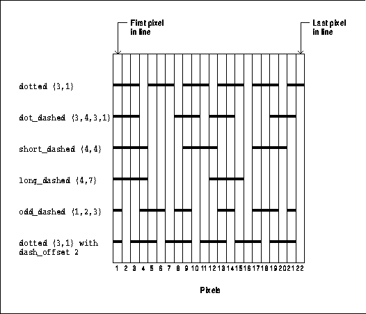
Setting line characteristics in a GC
set_line_attributes(gc)
GC gc;
{
unsigned int line_width = 3; /* 0 would be fast line of width 1 */
int line_style = LineSolid; /* If LineOnOffDash or LineDoubleDash,
* must set dashes */
int cap_style = CapRound; /* else CapNotLast, CapButt, or
* CapProjecting */
int join_style = JoinRound; /* else JoinMiter or JoinBevel */
XSetLineAttributes(display, gc, line_width, line_style,
cap_style, join_style);
}
The X server actually loads a requested font into memory only when XLoadFont() or XLoadQueryFont() is called and if the specified font has not already been loaded by another client. A font is unloaded when the last program using the font exits or unloads it. Duplicate copies of a font are never stored in the server.
There are several ways to deal with fonts. Most programs will use XLoadQueryFont() to load a font and get information about the dimensions of each character. XLoadQueryFont() returns a pointer to an XFontStruct. The font in the GC can then be set to XFontStruct.fid. (See Chapter 6, "Drawing Graphics and Text," for details.)
The default font is always loaded, but it is not the same on all servers. Section 6.2.2, "Loading Fonts" describes how a program can find out about the default font on the particular server it is connected to.
As shown in Figure 5-7, EvenOddRule means that if areas overlap an odd number of times, they are not drawn. Technically, it specifies that a point is drawn if an infinite ray with the point as origin crosses the path an odd number of times.
WindingRule, also shown in Figure 5-7, means that overlapping areas are always filled, regardless of how many times they overlap. Technically, this rule specifies that a point is inside the filled area if an infinite ray with the point as origin crosses an unequal number of clockwise- and counterclockwise-directed path segments.
Since polygons are drawn as a series of points connected by lines, the order of the points determines the direction of each line. A clockwise-directed path segment is one which crosses the ray from left to right as observed from the point. A counterclockwise-directed segment is one which crosses the ray from right to left as observed from the point. The case where a directed line segment is coincident with the ray is uninteresting, because you can simply choose a different ray that is not coincident with a segment.
All calculations are performed on infinitely small points, so that if any point within a pixel is considered inside, the entire pixel is drawn. Pixels with centers exactly on vertical boundaries are considered inside only if the filled area is to the right. On horizontal boundaries, the pixel is considered inside only if the filled area is below the pixel.
fill_rule constants for filling closed polygons
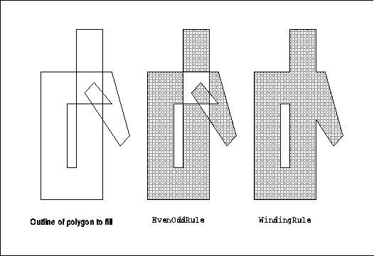
An arc is specified for XFillArc or XFillArcs() as follows:
The arc_mode can be either ArcPieSlice or ArcChord. Figure 5-8 demonstrates the two modes. For ArcChord, the arc and the single line segment joining the endpoints of the arc create a closed figure to fill. For ArcPieSlice, the arc and the two line segments joining the endpoints of the arc with the center point create a closed figure to fill.
arc_mode constants for filling arcs
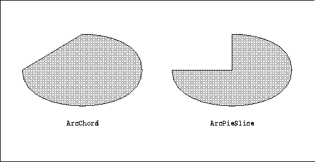
Pixels not represented by a set bit in the clip mask will not be drawn. The clip_mask can be set with XSetClipMask(), XSetClipRectangles(), or XSetRegion(). XSetClipMask() sets a clip mask composed of an arbitrary set of bits. XSetClipRectangles() specifies an array of rectangles that will collectively be used as a clip mask. XSetRegion() is another way to set the clip mask to a set of rectangles, sometimes more convenient than XSetClipRectangles(). XUnionRectWithRegion() can be used to add the rectangle from an Expose event into a region. Then XSetRegion() sets the GC to clip output to those areas. This is useful for redrawing only the areas that have been exposed. See Example 3-15, which uses this technique. Figure 5-9 shows a rectangular clip_mask, which could be set with XSetClipMask(), XSetClipRectangles(), or XSetRegion().
If the clip_mask is set manually with XSetClipMask() or while creating the GC, a pixmap of depth 1 must be used. Then the only pixels drawn are those for which the clip_mask has a set bit. This pixmap must have the same root as the GC, or a BadMatch error will be generated.
Use of clip origin to locate the clip_mask relative to drawable
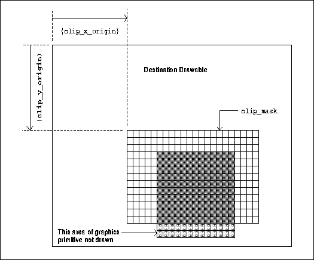
The clip origin, which places the clip_mask
relative to the destination drawable, is specified by two other members
of the GC structure: clip_x_origin and clip_y_origin. Figure
5-9 shows how these coordinates specify the upper-left corner of the clip
mask relative to the upper-left corner of the destination drawable specified
in the graphics request. The origin of the clip_mask can be set
with XSetClipOrigin(). The gray area in the figure represents the
data to be drawn. The rectangle filled with unshaded squares represents
the clip mask, which has all bits set to one. The lighter gray at the bottom
shows the area outside the clip mask; this data will not be drawn.
There are four ways of coloring the pixels, controlled by the fill_style member of the GC. One of them uses a single color, and the other three apply patterns in different ways. You can pattern anything you can draw, including text, although lines of width 0 are not patterned.
We will begin by discussing the simple case, drawing with only the foreground color using fill_style of FillSolid. Then, to understand the effect of the patterning values for the fill_style, we must digress into a short description of tiles and stipples, followed by a discussion of the three styles of patterning.
Figure 5-10 shows the use of the foreground pixel value when drawing a character with XDrawString(). We will contrast this later with a string drawn using XDrawImageString(), which will also draw the bounding box with the background pixel value.
Use of foreground in XDrawString() character
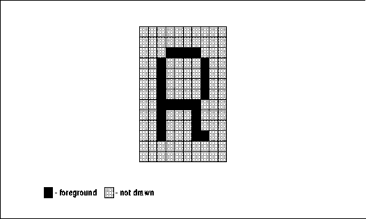
Now we move on to describe patterning. If you are familiar with tiles and stipples, you can skip Sections 5.4.2 and 5.4.3 and jump to Section 5.4.4, "Fill Style."
Tiles are so named because they are laid out next to each other in an array like bathroom tile. The origin of the first tile is specified with ts_x_origin and ts_y_origin, which are relative to the origin of the destination drawable. These members of the GC are set with XSetTSOrigin(). Only pixels specified by set bits in the first stage bitmap are tiled. Figure 5-11 shows how tiles are used to pattern an area. Instead of being filled with a solid color (or shade of gray), the area is filled with the tile pattern.
Tiling an area
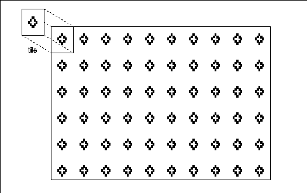
Creating a tile is described in Section 6.1.5, "Creating Bitmaps, Pixmaps, Tiles, and Stipples." The tile pixmap must be created on the same root window and have the same depth as the destination drawable. If these conditions are not satisfied, a BadMatch error is generated. If a pixmap is used simultaneously in a graphics request both as a destination and as a tile, the results are not defined.
Note that on monochrome displays, tiles are often used to simulate different levels of gray. For example, a checkerboard tile of black and white dots will appear gray on the screen. With 4 × 4 tile pixmaps with different arrangements of black and white dots, it is possible to develop several distinguishable levels of gray.
Just like tiles, stipples are laid out starting from the position specified with ts_x_origin and ts_y_origin, which are relative to the origin of the destination drawable.
Creating a pixmap of depth one to be used as a stipple is described in Section 6.1.5, "Creating Bitmaps, Pixmaps, Tiles, and Stipples." The stipple pixmap must be created on the same root window and have the same depth as the destination drawable. If these conditions are not satisfied, a BadMatch error is generated. If a pixmap is used simultaneously in a graphics request both as a destination and as a stipple, the results are not defined.
The stipple member of the GC may be changed with XSetStipple(). If both the stipple and tile members of the GC are set, the fill_style determines which is used. Both cannot be used in a single graphics request.
Remember that only the bits that are set to one in the first stage bitmap are affected by coloring or patterning. The fill_style affects all line, text, and fill requests except lines drawn with line_width zero. Possible values are:
Figure 5-12 demonstrates the four fill styles demonstrated on small pixmaps.
fill_style demonstrated on small pixmaps

Odd dashes (numbering starting from zero) in dotted lines are a special case. For the gaps (odd dashes) in lines with line_style of LineDoubleDash, FillSolid means to draw the gaps in the background pixel value, and FillStippled means to draw in the background pixel value masked by stipple. With a line_style of LineDoubleDash, FillTiled and FillStippled have the effect of wiping out the odd dashes, so that the line looks like LineOnOffDash with the specified fill style.
Figure 5-13 shows the use of the foreground and background values when drawing a character with XDrawImageString(). This primitive draws both the character and its bounding box. The character itself is drawn in the foreground pixel value; the remainder of the pixels in the bounding box are drawn with the background pixel value.
Use of foreground and background in XDrawImageString() character
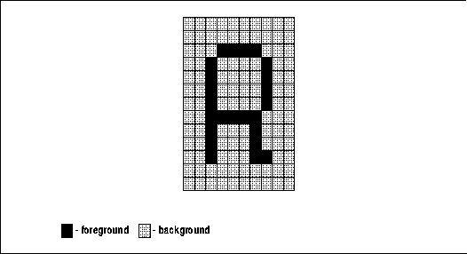
The background member of the GC is set with XSetBackground().
Section 6.1.5, "Creating Bitmaps, Pixmaps, Tiles, and
Stipples" explains how to create a tile or stipple.
Example 5-7 shows the types of the logical operation and plane mask components of the GC.
Members of XGCValues that control combining of source and destination pixels
The source (result of stage 2 of the drawing process) and existing destination pixels are combined by performing a logical function on the corresponding bits for each pixel. The plane_mask restricts the operation to a subset of planes, so that some bits in the source may be excluded from the computation. The clip_mask restricts the operation to a subset of the pixels, likewise eliminating some pixels from the result.int function; /* Logical function */ unsigned long plane_mask; /* Plane mask */
The source, destination, and plane_mask are combined using the algorithm shown below to yield the new destination pixel values. For each bit in each pixel that has been selected and colored in the first two drawing stages, the following expression defines whether that bit is set in the destination drawable:
That is, if the plane_mask bit is set, the source and existing destination pixels are combined using the logical function represented by FUNC. If the plane_mask bit is not set, the existing bit in the destination is not changed.((src FUNC dst) AND plane_mask) OR (dst AND (NOT plane_mask))
In the next two sections, we'll look at the actual values that can be specified for these members.
The source is the output of a graphics primitive or an
area of the screen or drawable (for an XCopyArea()); the destination
is the area of the drawable or window that is to receive the output. The
16 logical functions defined in <X11/X.h > are shown in Table
5-2.
| Logical Function | Hex Code | Definition |
|---|---|---|
| GXclear | 0x0 | 0 |
| GXand | 0x1 | src AND dst |
| GXandReverse | 0x2 | src AND (NOT dst) |
| GXcopy | 0x3 | src |
| GXandInverted | 0x4 | (NOT src) AND dst |
| GXnoop | 0x5 | dst |
| GXxor | 0x6 | src XOR dst |
| GXor | 0x7 | src OR dst |
| GXnor | 0x8 | (NOT src) AND (NOT dst) |
| GXequiv | 0x9 | (NOT src) XOR dst |
| GXinvert | 0xa | (NOT dst) |
| GXorReverse | 0xb | src OR (NOT dst) |
| GXcopyInverted | 0xc | (NOT src) |
| GXorInverted | 0xd | (NOT src) OR dst |
| GXnand | 0xe | (NOT src) OR (NOT dst) |
| GXset | 0xf | 1 |
Figures 5-14a, 5-14b, and 5-14c illustrate the effect of three logical functions on a single pixel of an eight-plane screen given a particular set of source and destination pixel values.
The effect of logical function GXcopy
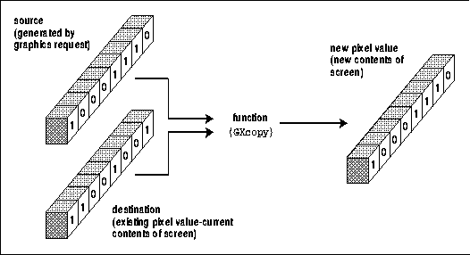
GXcopy, the default logical function, is the most frequently used because it copies without reference to the existing destination pixels, with predictable effects on both monochrome and color displays. GXxor and GXinvert are also used quite frequently. Rarely, programs may use other functions in concert with particular planes of a color display. Here is some more detail on the most frequently used logical functions:
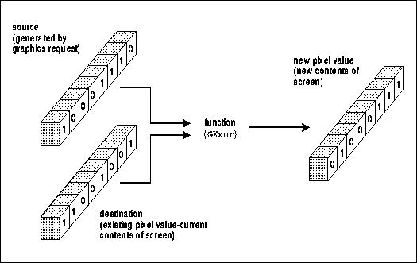
The effect of logical function GXand
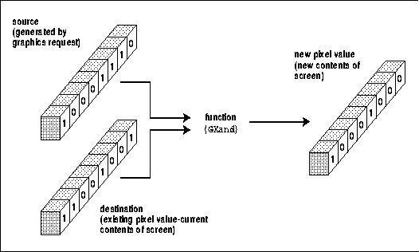
Destination planes represented by a bit set to 1 in the plane_mask can be changed by the graphics primitive, and the other planes cannot. The defined constant AllPlanes() provides a plane_mask with all bits set, which can be used when every plane is to be affected (this is also the default). A plane_mask of 0 cancels the effect of the graphics primitive. A plane_mask with only 1 bit set is useful for highlighting on both color and monochrome displays. Other tricks using the plane_mask are described in Chapter 7, Color. The macro DisplayPlanes() returns the number of planes available on the screen. However, the depth of the window is the upper limit on the number of meaningful bits in the plane_mask. Figure 5-15 illustrates the effect of the plane_mask.
The effect of the plane_mask on a 12-plane display

The graphics_exposures flag in the GC specifies whether or not events should be generated in such a case. There are actually two event types that can be generated if graphics_exposures is set to True:
Figure 5-16 shows a typical XCopyArea() request where the source region is obscured. It shows the areas that would be specified in the GraphicsExpose events generated.
As shown in Figure 5-16, a single XCopyPlane() or XCopyArea() can result in more than one GraphicsExpose event, since the resulting area to be redrawn may be composed of several rectangles. A copy such as the one shown in Figure 5-16 would generate two GraphicsExpose events. One rectangle is specified by each event. If windows A and B are removed and the copy repeated, a single NoExpose event is generated.
When graphics_exposures is False, neither of these events is sent under any circumstances. By default, graphics_exposures is True.
Copying a partially unavailable area
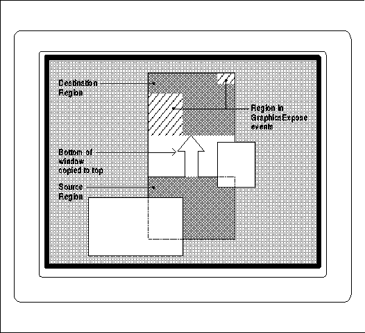
The value ClipByChildren sets the default condition, in which drawing into the area of a window obscured by its visible children produces no effect.
If the subwindow_mode is set to IncludeInferiors, drawing appears through visible children even when they have opaque backgrounds. The use of IncludeInferiors on a window of depth 1 with mapped inferiors of differing depth is not illegal, but the results are not defined in standard Xlib.
One familiar use of IncludeInferiors is the window
manager's "rubber banding" of window outlines while they are being moved
or resized. The outline is drawn on the root window with the GC set to
IncludeInferiors.
However, this should not be taken to extremes. For example, all applications could be written to use only one GC, changing it frequently every time different characteristics are needed. But this defeats two of the purposes of the GC, which are to reduce network traffic and simplify programming. There are also performance costs when GCs are changed too often.
Deciding how many GCs to create and when to change them
is a trade-off between the benefits of a more efficient server against
the benefits of reduced network traffic and simpler programming. The designers
of X still think that using a small number of GCs is, overall, the best
approach.
The type GC is a pointer to this internal structure. All Xlib routines use a pointer to this internal structure, not a integer ID, as we have previously implied. However, this fact does not impact how you write Xlib code at all. In practice, a pointer to an opaque structure and an integer ID such as a window ID are treated exactly the same.
In R4, the XGetGCValues() function has been added to allow clients to read Xlib's cache of the fields in each GC. This can save an application from having to maintain its own cache of GC values, when it needs to change the GC in several different places in ways that depend on the current contents.
Note that XGetGCValues() is not a true round-trip query to the server--there is no protocol request that actually asks the server for these values. This has good and bad consequences. The good part is that XGetGCValues() is fast because it is not subject to network delays. The bad side is that the values in Xlib's cache do not include the default values for certain of the GC members. The tile, stipple, and font fields contain invalid IDs when XGetGCValues() is called on a default GC. Therefore, even though there is actually a default font that is always loaded on a server, you cannot use XGetGCValues() to find out its ID. To get information about the default font, pass the default GC to XQueryFont() and it will get information about the default font. Neither is there any obvious reason for needing the IDs of the tile and stipple in the default GC.
Also note that the clip_mask and dashes
members of the GC cannot be queried.
The default GC can be used in simple applications. But it is not very useful since all applications should provide user customization of fonts and colors, and few can avoid the need to modify other GC components as well.
When you create a GC of your own, its default values are slightly different from the values of the default GC. Its foreground and background values are 0 and 1, respectively, so they are not necessarily black and white or contrasting. That's why you must always set foreground and background when you create a GC. Also, the default font is implementation dependent, and it may not be loaded. Therefore, you must always load the font before attempting to draw with it.
Table 5-3 shows the default values for all members of
a graphics context you create.
| Component | Value |
|---|---|
| function | GXcopy |
| plane_mask | all 1 's |
| foreground | 0 |
| background | 1 |
| line_width | 0 |
| line_style | LineSolid |
| cap_style | CapButt |
| join_style | JoinMiter |
| fill_style | FillSolid |
| fill_rule | EvenOddRule |
| arc_mode | ArcPieSlice |
| tile | Pixmap filled with foreground pixel |
| stipple | Pixmap filled with 1 's |
| ts_x_origin | 0 |
| ts_y_origin | 0 |
| font | (Implementation dependent) |
| subwindow_mode | ClipByChildren |
| graphics_exposures | True |
| clip_x_origin | 0 |
| clip_y_origin | 0 |
| clip_mask | None |
| dash_offset | 0 |
| dashes | 4 (i.e., the list [4, 4]) |
A useful quick reference to the graphics context is provided
inside the back cover of Volume Two, Xlib Reference Manual.
Xlib Programming Manual (O'Reilly & Associates, Inc.) |